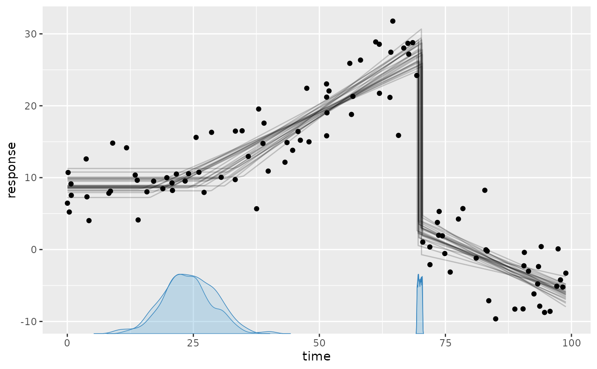
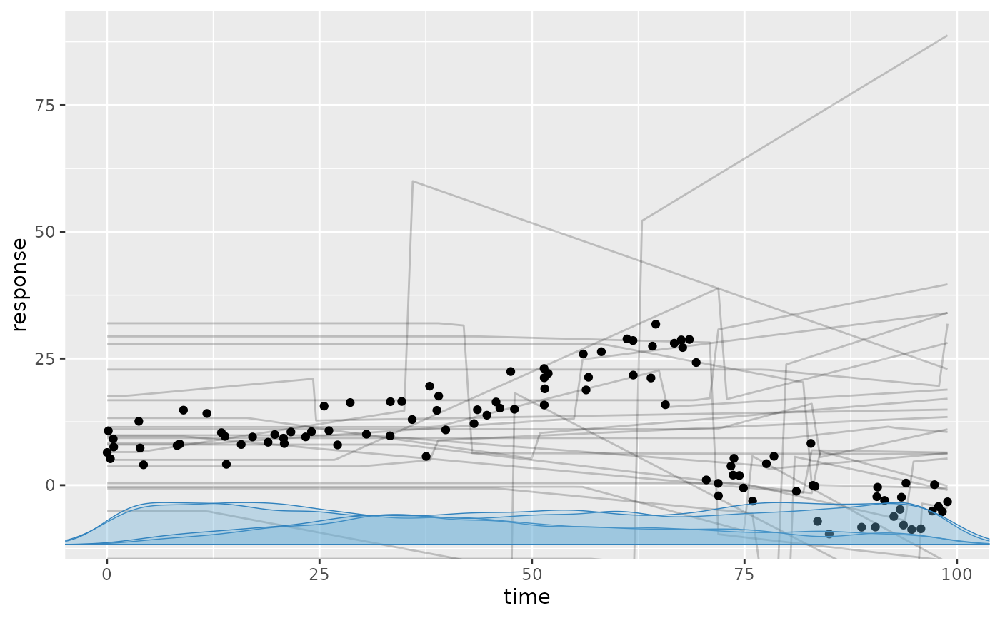
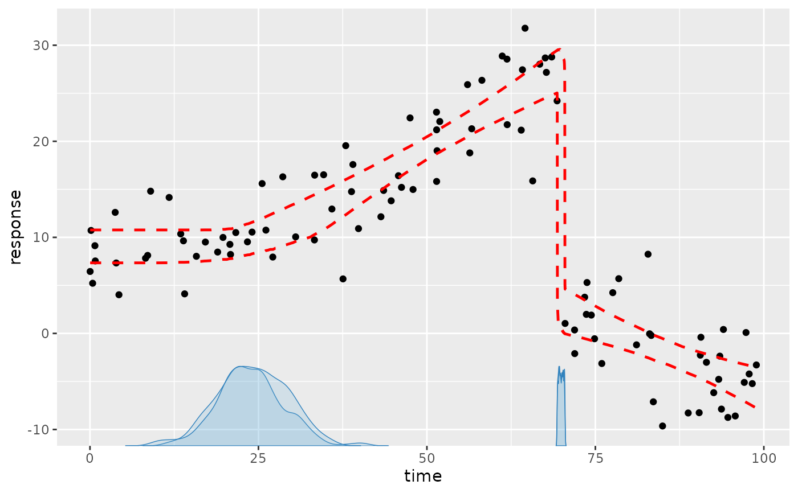
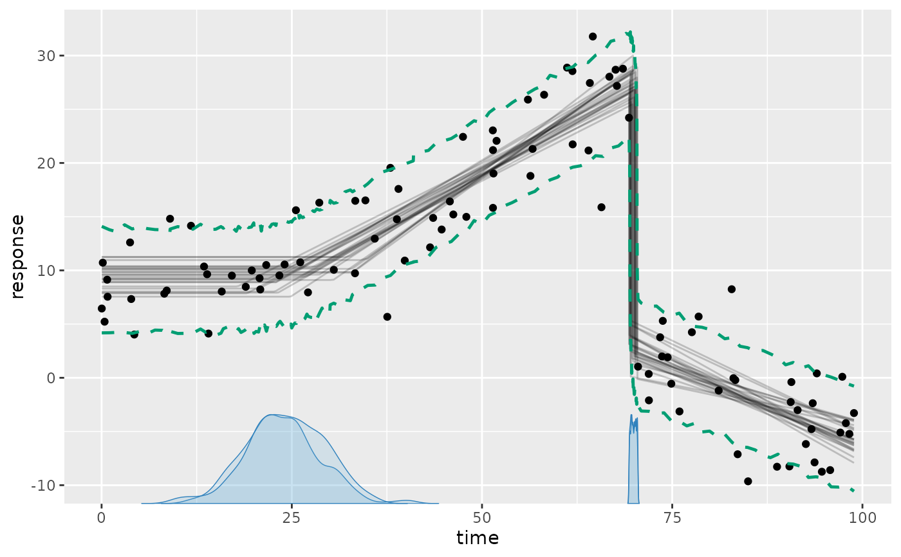
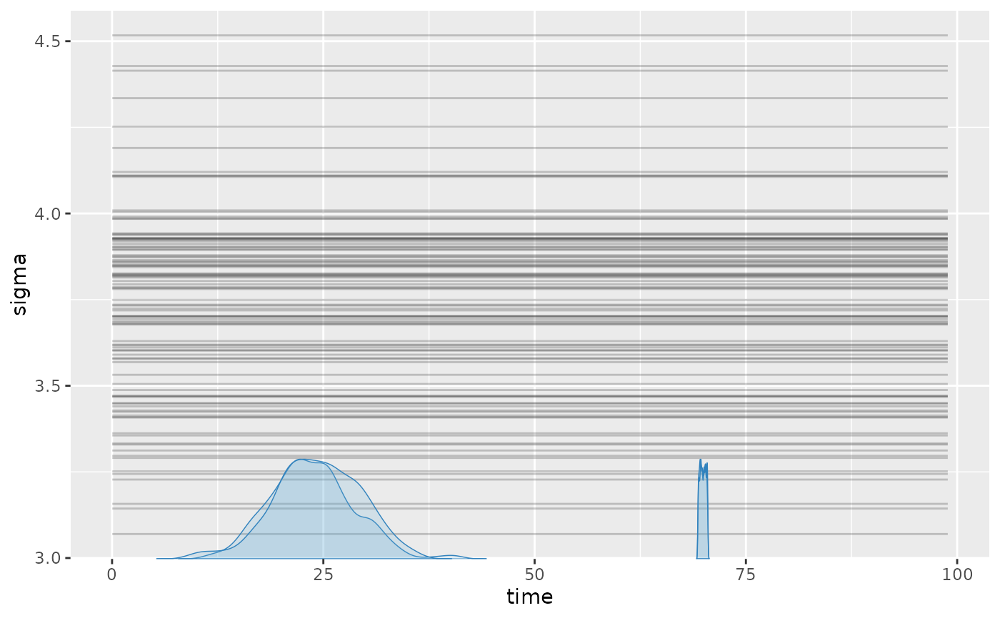
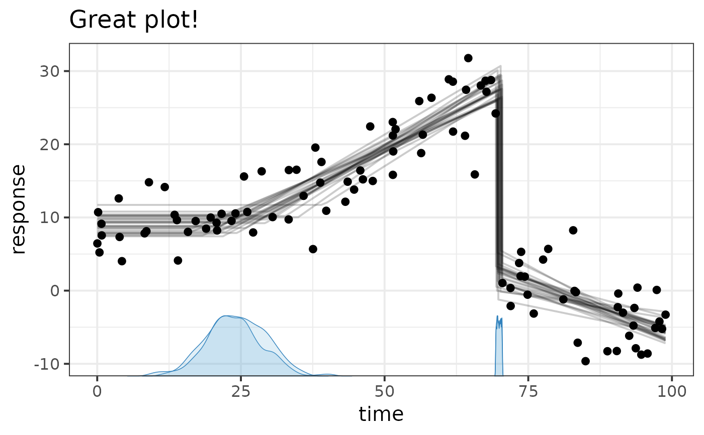

Plot prior or posterior model draws on top of data.
Usage
# S3 method for class 'mcpfit'
plot(
x,
q_fit = FALSE,
q_predict = FALSE,
facet_by = NULL,
color_by = NULL,
lines = 25,
geom_data = "point",
cp_dens = TRUE,
rate = TRUE,
prior = FALSE,
arma = TRUE,
ndraws = 1000,
at = NULL,
nsamples = lifecycle::deprecated(),
...
)
plot_dpar(
x,
dpar = "epred",
q_fit = FALSE,
facet_by = NULL,
color_by = NULL,
lines = 25,
cp_dens = TRUE,
prior = FALSE,
arma = TRUE,
ndraws = 1000,
scale = "response",
at = NULL,
nsamples = lifecycle::deprecated(),
...
)Arguments
- x
An
mcpfitobject- q_fit
Whether to plot quantiles of the posterior (fitted value).
TRUEAdd 2.5% and 97.5% quantiles. Corresponds toq_fit = c(0.025, 0.975).FALSENo quantilesA vector of quantiles. For example,
q_fit = 0.5plots the median andq_fit = c(0.2, 0.8)plots the 20% and 80% quantiles.
- q_predict
Same as
q_fit, but for the posterior predictive interval.- facet_by
Character vector. Names of categorical data columns to split to facets. Can be grouping-factor or categorical predictor columns.
- color_by
A character vector naming categorical predictor or grouping columns to color by. If both
color_byandfacet_byare omitted, a sole categorical predictor is colored automatically. Setcolor_by = NULLexplicitly to disable this. Multiple columns are combined as an interaction. Curves and quantiles remain separate for grouping columns not mapped to color.- lines
Positive integer or
FALSE. The number of fitted lines (draws). It is the number of joint posterior draws shown for every curve. FALSE orlines = 0plots no lines. Note that lines always plot fitted values - not predicted. For posterior predictive intervals, see theq_predictargument.- geom_data
String. One of "point", "line" (good for time-series), or FALSE (do not plot).
- cp_dens
TRUE/FALSE. Plot posterior densities of the change point(s)?
- rate
Boolean. For binomial models, return counts (
rate = FALSE) or the observed or expected success proportion (rate = TRUE). Predictions and count-scale fitted values require a trials column innewdata.- prior
Logical. Evaluate prior draws (
TRUE) instead of posterior draws (FALSE, default)? Useful formcp(..., sample = "both").- arma
Whether to include AR and MA effects.
TRUECompute the GARMA residual recurrence. Requires the response variable innewdata.FALSEDisregard AR and MA effects. Forfamily = gaussian(),predict()uses onlysigmafor residuals. For posterior evaluation of the original data, retained JAGS imputations supply missing GARMA histories. In models with group-level effects, this currently requires including all such effects (varying = TRUE).
- ndraws
Integer or
NULL. Number of posterior draws to return/summarise. If there are group-level effects, this is the number of draws from each group.NULLmeans "all". More draws trade speed for accuracy.- at
Named list setting additional continuous predictors to fixed values. They default to their observed means. Family-specific response auxiliaries can be supplied as explicit scalar design values. Passed to
interpolate_newdata().- nsamples
Deprecated. Use
ndrawsinstead.- ...
Currently ignored.
- dpar
What distributional parameter to evaluate. This is only relevant when
type == "fitted". E.g.,"epred"(default): Expected response from the full model (orNULLfor compatibility with brms etc.)."mu": The conditional mean (or success probability per trial for binomial/bernoulli models), on the link or response scale."sigma": The standard deviation of the residuals."ar1","ar2","ma1","ma2", etc. depending on which AR or MA coefficient you want to evaluate.
- scale
One of
"response": return on the observed scale, i.e., after applying the inverse link function."linear": return on the linear-predictor (link) scale, where the linear trends are modeled. A linear scale is only applicable whentype == "fitted"anddparis notNULL.
Details
plot() uses fit$simulate() on posterior draws. These represent the
(joint) posterior distribution. Interval summaries use at most 1000 draws
by default; use ndraws = NULL to use all draws. Change-point densities
always use all available draws.
Author
Jonas Kristoffer Lindeløv jonas@lindeloev.dk
Examples
# Typical usage. demo_fit is an mcpfit object.
plot(demo_fit)

# \donttest{
plot(demo_fit, prior = TRUE) # The prior

plot(demo_fit, lines = 0, q_fit = TRUE) # 95% central interval without lines

plot(demo_fit, q_predict = c(0.1, 0.9)) # 80% posterior predictive interval

plot_dpar(demo_fit, dpar = "sigma", lines = 100) # Residual standard deviation on y

# Show a panel for each group-level effect
# plot(fit, facet_by = "my_column")
# Customize plots using regular ggplot2
library(ggplot2)
plot(demo_fit) + theme_bw(15) + ggtitle("Great plot!")

# }